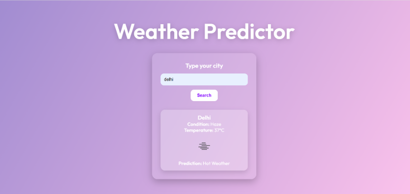

Profile
A motivated and detail-oriented Computer Science undergraduate specializing in Artificial Intelligence and Machine Learning at Vellore Institute of Technology. Skilled in Python, C++, JavaScript, and web technologies, with hands-on experience in developing real-time web applications and machine learning-based tools. Proven ability to design user-centric interfaces, manage technical projects, and lead public relations efforts through extracurricular involvement. Certified by Meta, IBM, and HackerRank, demonstrating strong problem-solving abilities and a foundation in modern software development practices. Seeking an internship or entry-level role to contribute to innovative tech solutions and grow as a developer.
Back to homepageProjects
Weather Website – Real-Time Weather Forecasting Platform
• Built a web-based application to fetch and display real-time weather data for any city using OpenWeatherMap API.
• Implemented city-based search with dynamic weather condition rendering including temperature, condition, and icons.
• Designed a responsive, glass morphism-style UI for an engaging user experience across desktop and mobile.

Signature Detection Website – Image-Based Signature Verification Tool
• Developed a web application that allows users to upload images to check for genuine or forged signatures.
• Implemented simulated signature detection logic with dynamic result rendering and user feedback using JavaScript.
• Designed a responsive neon-themed UI with custom animations, file validation, and consent-based access flow.

Education
St.Mary's School - Mainpuri
intermediate,2023
Vit Bhopal University
B.Tech(CS(AIML)),2027
Technical Skills
- HTML
- CSS
- JavaScript
- Python
- Java
- DSA(C++)